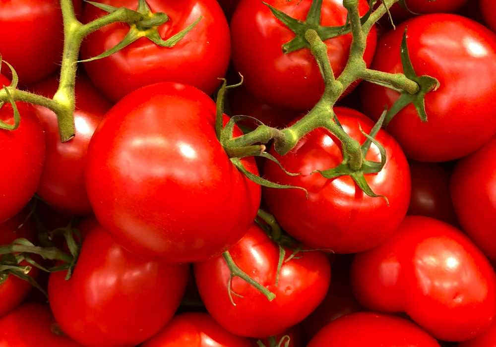

[Special Issue] World of food ingredients 1 / Oct 15, 2020
Tomato
From Wikipedia, the free encyclopedia Tomatoes are a significant source of umami flavor...
Read More...Tomatoes are a significant source of umami flavor...
Read More...The carrot is a root vegetable. Baby carrots have been a popular ready-to-eat snack ...
Read More...Lemon juice, rind, and peel are used in a wide variety of foods and drinks...
Read More...Scallions may be cooked or used raw as a part of salads, salsas or Asian recipes...
Read More...Black pepper, known as a peppercorn, is usually dried and used as a spice and seasoning...
Read More...